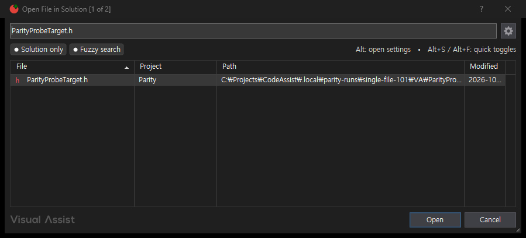
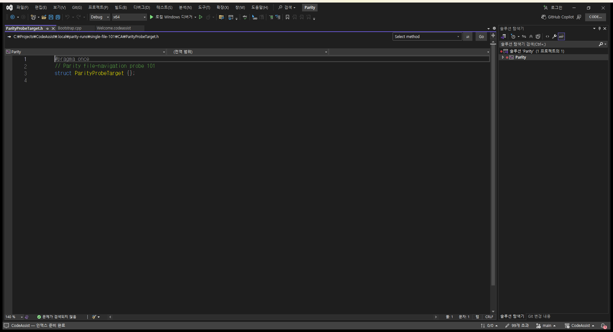

입력: ParityProbeTarget.h 검색 → Open/Goto 선택. 기대 결과: 각 전용 프로젝트의 목표 파일이 실제 편집기에 열리고 파일 내용도 같아야 함.
VA·CA 모두 전체 활성 문서 경로와 버퍼 내용이 기대값과 일치했습니다. 창 열기만으로 통과하지 않았습니다. 잘못된 파일 열림 및 실행 오류 판정의 음성 검사 2개도 통과했습니다. 이 한 시나리오의 일치이며 기능 전체·다른 검색 조건을 인증하지 않습니다.
실제 대조 실행 1813.39 ms. 전체 경로·버퍼 원본 · 집계 · 108개 상태
{
"token": "73d0d637f60a4da6b9859fd6cf763ede",
"role": "VA",
"pid": 23468,
"status": "complete",
"hostUnsafe": false,
"before": {
"file": "C:\\Projects\\CodeAssist\\.local\\parity-runs\\single-file-101\\VA\\Bootstrap.cpp"
},
"after": {
"file": "C:\\Projects\\CodeAssist\\.local\\parity-runs\\single-file-101\\VA\\ParityProbeTarget.h",
"contents": "#pragma once\r\n// Parity file-navigation probe 101\r\nstruct ParityProbeTarget {};\r\n"
},
"expectedFile": "C:\\Projects\\CodeAssist\\.local\\parity-runs\\single-file-101\\VA\\ParityProbeTarget.h",
"expectedFileOpen": true,
"expectedContent": "#pragma once\r\n// Parity file-navigation probe 101\r\nstruct ParityProbeTarget {};\r\n",
"driver": {
"query": "ParityProbeTarget.h",
"submitted": true,
"button": "Open",
"driver": "native HWND controls"
},
"error": null,
"measuredActionMs": 503
}
{
"token": "73d0d637f60a4da6b9859fd6cf763ede",
"role": "CA",
"pid": 31460,
"status": "complete",
"hostUnsafe": false,
"before": {
"file": "C:\\Projects\\CodeAssist\\.local\\parity-runs\\single-file-101\\CA\\Bootstrap.cpp"
},
"after": {
"file": "C:\\Projects\\CodeAssist\\.local\\parity-runs\\single-file-101\\CA\\ParityProbeTarget.h",
"contents": "#pragma once\r\n// Parity file-navigation probe 101\r\nstruct ParityProbeTarget {};\r\n"
},
"expectedFile": "C:\\Projects\\CodeAssist\\.local\\parity-runs\\single-file-101\\CA\\ParityProbeTarget.h",
"expectedFileOpen": true,
"expectedContent": "#pragma once\r\n// Parity file-navigation probe 101\r\nstruct ParityProbeTarget {};\r\n",
"driver": {
"query": "ParityProbeTarget.h",
"submitted": true,
"button": "Goto",
"labels": [
"×",
"CodeAssist: 파일 찾기",
"Fuzzy search",
"Goto",
"Cancel",
"CodeAssist",
"File",
"Path",
"ParityProbeTarget.h",
"C:\\Projects\\CodeAssist\\.local\\parity-runs\\single-file-101\\CA\\ParityProbeTarget.h"
]
},
"error": null,
"measuredActionMs": 747
}

{
"featureId": "VA-F012",
"scenario": "Search and actually open the expected solution file",
"result": "representative-match",
"expectedFile": "ParityProbeTarget.h",
"checked": [
"same input query",
"Open/Goto submitted",
"full active-document path",
"editor buffer content"
],
"VAActionMs": 503,
"CAActionMs": 747,
"pairedItemMs": 1813.39,
"negativeChecksPassed": 2,
"proposedSeconds": 300,
"elapsedSeconds": 303,
"finishedAt": "2026-10-18T22:21:25.367909+09:00",
"overall": {
"matches": 5,
"differences": 7,
"unverified": 96,
"total": 108,
"determinatePercent": 11.11,
"confirmedRepresentativeMatchPercent": 4.63
},
"fullFeatureCertified": false
}